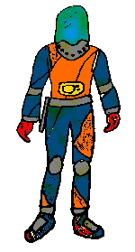

Biolunas
Las Biolunas son lunas que poseen vida, que orbitan en un planeta más allá del Universo. Están dominadas por seres humanoides con habilidades sorprendentes y unicás.
Las Biolunas son lunas que poseen vida, que orbitan en un planeta más allá del Universo. Están dominadas por seres humanoides con habilidades sorprendentes y unicás.